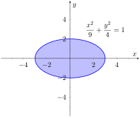
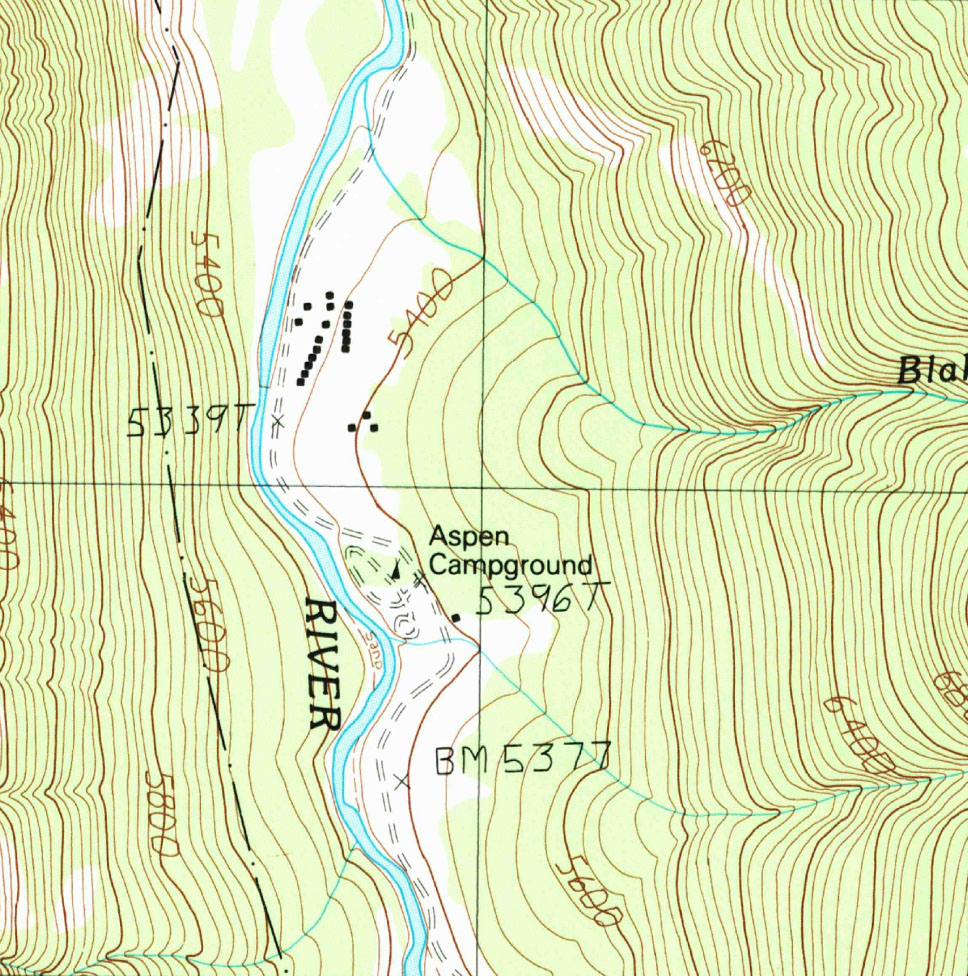

Section13.1Introduction to Multivariable Functions
Definition13.1.1.Function of Two Variables.
Let \(D\) be a subset of \(\mathbb{R}^2\text{.}\) A function \(f\) of two variables is a rule that assigns each pair \((x,y)\) in \(D\) a value \(z=f(x,y)\) in \(\mathbb{R}\text{.}\)\(D\) is the domain of \(f\text{;}\) the set of all outputs of \(f\) is the range.
Figure13.1.2.Video introduction to multivariable function notation
Example13.1.3.Understanding a function of two variables.
Let \(z=f(x,y) = x^2-y\text{.}\) Evaluate \(f(1,2)\text{,}\)\(f(2,1)\text{,}\) and \(f(-2,4)\text{;}\) find the domain and range of \(f\text{.}\)
The domain is not specified, so we take it to be all possible pairs in \(\mathbb{R}^2\) for which \(f\) is defined. In this example, \(f\) is defined for all pairs \((x,y)\text{,}\) so the domain \(D\) of \(f\) is \(\mathbb{R}^2\text{.}\)
The output of \(f\) can be made as large or small as possible; any real number \(r\) can be the output. (In fact, given any real number \(r\text{,}\)\(f(0,-r)=r\text{.}\)) So the range \(R\) of \(f\) is \(\mathbb{R}\text{.}\)
Example13.1.4.Understanding a function of two variables.
Let \(f(x,y) = \sqrt{1-\frac{x^2}9-\frac{y^2}4}\text{.}\) Find the domain and range of \(f\text{.}\)
The domain is all pairs \((x,y)\) allowable as input in \(f\text{.}\) Because of the square root, we need \((x,y)\) such that \(0\leq1-\frac{x^2}9-\frac{y^2}4\text{:}\)
The above equation describes an ellipse and its interior as shown in Figure 13.1.5. We can represent the domain \(D\) graphically with the figure; in set notation, we can write \(D = \{(x,y)|\,\frac{x^2}9+\frac{y^2}4 \leq 1\}\text{.}\)

Figure13.1.5.Illustrating the domain of \(f(x,y)\) in Example 13.1.4
The range is the set of all possible output values. The square root ensures that all output is \(\geq 0\text{.}\) Since the \(x\) and \(y\) terms are squared, then subtracted, inside the square root, the largest output value comes at \(x=0\text{,}\)\(y=0\text{:}\)\(f(0,0) = 1\text{.}\) Thus the range \(R\) is the interval \([0,1]\text{.}\)
Subsection13.1.1Graphing Functions of Two Variables
The graph of a function \(f\) of two variables is the set of all points \(\big(x,y,f(x,y)\big)\) where \((x,y)\) is in the domain of \(f\text{.}\) This creates a surface in space.
One can begin sketching a graph by plotting points, but this has limitations. Consider Figure 13.1.6.(a) where 25 points have been plotted of \(f(x,y) = \frac1{x^2+y^2+1}\text{.}\) More points have been plotted than one would reasonably want to do by hand, yet it is not clear at all what the graph of the function looks like. Technology allows us to plot lots of points, connect adjacent points with lines and add shading to create a graph like Figure 13.1.6.(b) which does a far better job of illustrating the behavior of \(f\text{.}\)
While technology is readily available to help us graph functions of two variables, there is still a paper-and-pencil approach that is useful to understand and master as it, combined with high-quality graphics, gives one great insight into the behavior of a function. This technique is known as sketching level curves.
Subsection13.1.2Level Curves
It may be surprising to find that the problem of representing a three dimensional surface on paper is familiar to most people (they just don't realize it). Topographical maps, like the one shown in Figure 13.1.7, represent the surface of Earth by indicating points with the same elevation with contour lines. The elevations marked are equally spaced; in this example, each thin line indicates an elevation change in 50ft increments and each thick line indicates a change of 200ft. When lines are drawn close together, elevation changes rapidly (as one does not have to travel far to rise 50ft). When lines are far apart, such as near “Aspen Campground,” elevation changes more gradually as one has to walk farther to rise 50ft.

Figure13.1.7.A topographical map displays elevation by drawing contour lines, along with the elevation is constant. USGS 1:24000-scale Quadrangle for Chrome Mountain, MT 1987.
Given a function \(f(x,y)\text{,}\) we can draw a “topographical map” of the graph \(z=f(x,y)\) by drawing level curves (or, contour lines). A level curve at \(z=c\) is a curve in the \(xy\)-plane such that for all points \((x,y)\) on the curve, \(f(x,y) = c\text{.}\)
When drawing level curves, it is important that the \(c\) values are spaced equally apart as that gives the best insight to how quickly the “elevation” is changing. Examples will help one understand this concept.
Example13.1.8.Drawing Level Curves.
Let \(f(x,y) = \sqrt{1-\frac{x^2}9-\frac{y^2}4}\text{.}\) Find the level curves of \(f\) for \(c=0\text{,}\)\(0.2\text{,}\)\(0.4\text{,}\)\(0.6\text{,}\)\(0.8\) and \(1\text{.}\)
Consider first \(c=0\text{.}\) The level curve for \(c=0\) is the set of all points \((x,y)\) such that \(0=\sqrt{1-\frac{x^2}9-\frac{y^2}4}\text{.}\) Squaring both sides gives us
an ellipse centered at \((0,0)\) with horizontal major axis of length 6 and minor axis of length 4. Thus for any point \((x,y)\) on this curve, \(f(x,y) = 0\text{.}\)
ellipses that are decreasing in size as \(c\) increases. A special case is when \(c=1\text{;}\) there the ellipse is just the point \((0,0)\text{.}\)
The level curves are shown in Figure 13.1.9.(a). Note how the level curves for \(c=0\) and \(c=0.2\) are very, very close together: this indicates that \(f\) is growing rapidly along those curves.
Figure13.1.9.Graphing the level curves in Example 13.1.8
In Figure 13.1.9.(b), the curves are drawn on a graph of \(f\) in space. Note how the elevations are evenly spaced. Near the level curves of \(c=0\) and \(c=0.2\) we can see that \(f\) indeed is growing quickly.
Example13.1.10.Analyzing Level Curves.
Let \(f(x,y) = \frac{x+y}{x^2+y^2+1}\text{.}\) Find the level curves for \(z=c\text{.}\)
a circle centered at \(\big(1/(2c),1/(2c)\big)\) with radius \(\sqrt{1/(2c^2)-1}\text{,}\) where \(\abs{c}\lt 1/\sqrt{2}\text{.}\) The level curves for \(c=\pm 0.2,\,\pm 0.4\) and \(\pm0.6\) are sketched in Figure 13.1.11.(a). To help illustrate “elevation,” we use thicker lines for \(c\) values near 0, and dashed lines indicate where \(c\lt 0\text{.}\)
There is one special level curve, when \(c=0\text{.}\) The level curve in this situation is \(x+y=0\text{,}\) the line \(y=-x\text{.}\)
In Figure 13.1.11.(b) we see a graph of the surface. Note how the \(y\)-axis is pointing away from the viewer to more closely resemble the orientation of the level curves in Figure 13.1.11.(a).
Seeing the level curves helps us understand the graph. For instance, the graph does not make it clear that one can “walk” along the line \(y=-x\) without elevation change, though the level curve does.
Subsection13.1.3Functions of Three Variables
We extend our study of multivariable functions to functions of three variables. (One can make a function of as many variables as one likes; we limit our study to three variables.)
Definition13.1.12.Function of Three Variables.
Let \(D\) be a subset of \(\mathbb{R}^3\text{.}\) A function \(f\) of three variables is a rule that assigns each triple \((x,y,z)\) in \(D\) a value \(w=f(x,y,z)\) in \(\mathbb{R}\text{.}\)\(D\) is the domain of \(f\text{;}\) the set of all outputs of \(f\) is the range.
Note how this definition closely resembles that of Definition 13.1.1.
Example13.1.13.Understanding a function of three variables.
Let \(f(x,y,z) = \frac{x^2+z+3\sin(y) }{x+2y-z}\text{.}\) Evaluate \(f\) at the point \((3,0,2)\) and find the domain and range of \(f\text{.}\)
As the domain of \(f\) is not specified, we take it to be the set of all triples \((x,y,z)\) for which \(f(x,y,z)\) is defined. As we cannot divide by \(0\text{,}\) we find the domain \(D\) is
\begin{equation*}
D = \{(x,y,z)\,|\,x+2y-z\neq 0\}\text{.}
\end{equation*}
We recognize that the set of all points in \(\mathbb{R}^3\) that are not in \(D\) form a plane in space that passes through the origin (with normal vector \(\la 1,2,-1\ra\)).
We determine the range \(R\) is \(\mathbb{R}\text{;}\) that is, all real numbers are possible outputs of \(f\text{.}\) There is no set way of establishing this. Rather, to get numbers near 0 we can let \(y=0\) and choose \(z \approx -x^2\text{.}\) To get numbers of arbitrarily large magnitude, we can let \(z\approx x+2y\text{.}\)
Subsection13.1.4Level Surfaces
It is very difficult to produce a meaningful graph of a function of three variables. A function of one variable is a curve drawn in 2 dimensions; a function of two variables is a surface drawn in 3 dimensions; a function of three variables is a hypersurface drawn in 4 dimensions.
There are a few techniques one can employ to try to “picture” a graph of three variables. One is an analogue of level curves: level surfaces. Given \(w=f(x,y,z)\text{,}\) the level surface at \(w=c\) is the surface in space formed by all points \((x,y,z)\) where \(f(x,y,z)=c\text{.}\)
Example13.1.14.Finding level surfaces.
If a point source \(S\) is radiating energy, the intensity \(I\) at a given point \(P\) in space is inversely proportional to the square of the distance between \(S\) and \(P\text{.}\) That is, when \(S=(0,0,0)\text{,}\)\(I(x,y,z) = \frac{k}{x^2+y^2+z^2}\) for some constant \(k\text{.}\)
Let \(k=1\text{;}\) find the level surfaces of \(I\text{.}\)
We can (mostly) answer this question using “common sense.” If energy (say, in the form of light) is emanating from the origin, its intensity will be the same at all points equidistant from the origin. That is, at any point on the surface of a sphere centered at the origin, the intensity should be the same. Therefore, the level surfaces are spheres.
We now find this mathematically. The level surface at \(I=c\) is defined by
\begin{align*}
c \amp = \frac{1}{x^2+y^2+z^2}.\\
\end{align*}
Given an intensity \(c\text{,}\) the level surface \(I=c\) is a sphere of radius \(1/\sqrt{c}\text{,}\) centered at the origin.
Table13.1.15.A table of \(c\) values and the corresponding radius \(r\) of the spheres of constant value in Example 13.1.14
\(c\)
\(r\)
16.
0.25
8.
0.35
4.
0.5
2.
0.71
1.
1.
0.5
1.41
0.25
2.
0.125
2.83
0.0625
4.
Figure 13.1.15 gives a table of the radii of the spheres for given \(c\) values. Normally one would use equally spaced \(c\) values, but these values have been chosen purposefully. At a distance of 0.25 from the point source, the intensity is 16; to move to a point of half that intensity, one just moves out 0.1 to 0.35 — not much at all. To again halve the intensity, one moves 0.15, a little more than before.
Note how each time the intensity if halved, the distance required to move away grows. We conclude that the closer one is to the source, the more rapidly the intensity changes.
In the next section we apply the concepts of limits to functions of two or more variables.
Exercises13.1.5Exercises
Terms and Concepts
1.
Give two examples (other than those given in the text) of “real world” functions that require more than one input.
2.
The graph of a function of two variables is a .
3.
Most people are familiar with the concept of level curves in the context of maps.
4.
T/F: Along a level curve, the output of a function does not change.
5.
The analogue of a level curve for functions of three variables is a level .
6.
What does it mean when level curves are close together? Far apart?
Problems
Exercise Group.
In the following exercises, give the domain and range of the multivariable function.
7.
\(f(x,y) = x^2+y^2+2\)
8.
\(f(x,y) = x+2y\)
9.
\(f(x,y) = x-2y\)
10.
\(\ds f(x,y) = \frac{1}{x+2y}\)
11.
\(\ds f(x,y) = \frac{1}{x^2+y^2+1}\)
12.
\(\ds f(x,y) = \sin(x) \cos(y)\)
13.
\(\ds f(x,y) = \sqrt{9-x^2-y^2}\)
14.
\(\ds f(x,y) = \frac1{\sqrt{x^2+y^2-9}}\)
Exercise Group.
In the following exercises, describe in words and sketch the level curves for the function and given \(c\) values.
In the following exercises, give the domain and range of the functions of three variables.
23.
\(\ds f(x,y,z) = \frac{x}{x+2y-4z}\)
24.
\(\ds f(x,y,z) = \frac{1}{1-x^2-y^2-z^2}\)
25.
\(\ds f(x,y,z) = \sqrt{z-x^2+y^2}\)
26.
\(\ds f(x,y,z) = z^2\sin(x) \cos(y)\)
Exercise Group.
In the following exercises, describe the level surfaces of the given functions of three variables.
27.
\(\ds f(x,y,z) = x^2+y^2+z^2\)
28.
\(\ds f(x,y,z) = z-x^2+y^2\)
29.
\(\ds f(x,y,z) = \frac{x^2+y^2}{z}\)
30.
\(\ds f(x,y,z) = \frac{z}{x-y}\)
31.
Compare the level curves of Exercises 13.1.5.21 and Exercise 13.1.5.22. How are they similar, and how are they different? Each surface is a quadric surface; describe how the level curves are consistent with what we know about each surface.